Séance 5
- Retour sur le théorème de l'échantillonnage et sur le spectre
- Retour et approfondissement de la quantification
transformée de fourier
magnitude
phase
demo (fft)
demo (stft)
signal temporel
transformée de fourier
magnitude
phase
signal temporel
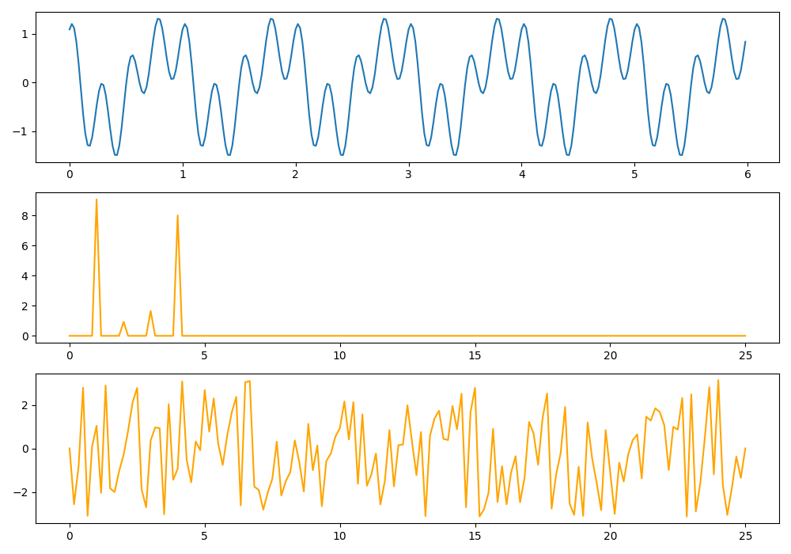
temporel (secondes)
fréquentiel (Hz)
[-π ; π]
magnitude
phase
transformée de fourier
magnitude
phase
signal
transformée de fourier
magnitude
phase
signal
transformée de fourier
magnitude
phase
signal
transformée de Fourier
inverse
magnitude
phase
signal
transformée de Fourier
magnitude
phase
transformée de Fourier
inverse
signal
analyse
synthèse
Définition :
Transformation d'un signal analogique, dont les variations sont continues, en une suite de valeurs discrètes
Continu - Discret
ce qui est d'un seul tenant
ce qui module avec tous les degrés intermédiaires
ce qui est composé de valeurs distinctes séparées les unes des autres
Numérisation d'un signal
Numérisation d'un signal
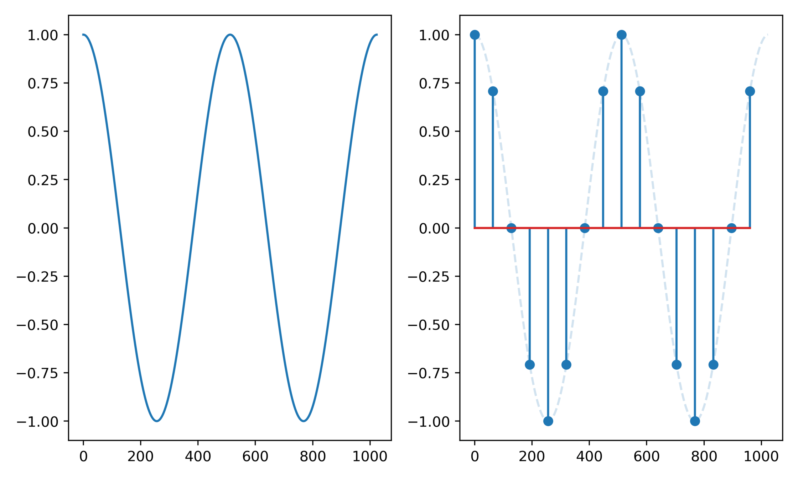
discrétisation temporelle : échantillonage
Numérisation d'un signal

discrétisation d'amplitude : quantification
discrétisation temporelle : échantillonage
➞ problème :
discrétisation d'amplitude : quantification
➞ problème :
discrétisation temporelle : échantillonage
discrétisation d'amplitude : quantification
➞ problème :
➞ problème : repliement
discrétisation temporelle : échantillonage
discrétisation d'amplitude : quantification
➞ problème : repliement
➞ problème : bruit de quantification
Repliement
A partir d'une certaine fréquence, la fréquence d'une onde quantifiée descend plutôt que de monter!
Repliement

A partir d'une certaine fréquence, la fréquence d'une onde quantifiée descend plutôt que de monter! l'onde est ambigüe : elle peut correspondre à plusieurs fréquences!
Repliement
A une onde quantifiée, il existe dans le domaine continu une infinité d'ondes correspondantes (qui "matchent" la même suite de valeurs)

Heureusement, ce phénomène est facilement explicable; en réalité, le spectre du signal est "dupliqué" autour de tout multiple de la fréquence d'échantillonage

Donc, si la fréquence d'échantillonnage est mal choisie, certaines fréquences du signal seront ambigües et donc mal restituées
On appelle cette fréquence la fréquence de Nyquist, la fréquence maximale enregistrable à une fréquence d'échantillonnage Fe (sampling rate en anglais).
fréquence de Nyquist
fréquence d'échantillonage
En audio, il faut donc choisir une fréquence d'échantillonage qui est le double de la fréquence maximum qu'on veut numériser

on filtre le signal avant numérisation pour éviter que les fréquences se replient pendant l'échantillonnage!
Réalité :
Difficulté de réalisation, nécessite un filtre analogique d'ordre 13 minimum. Très difficile à réaliser sans "ripples" et très cher.
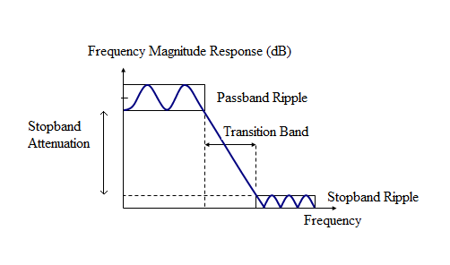
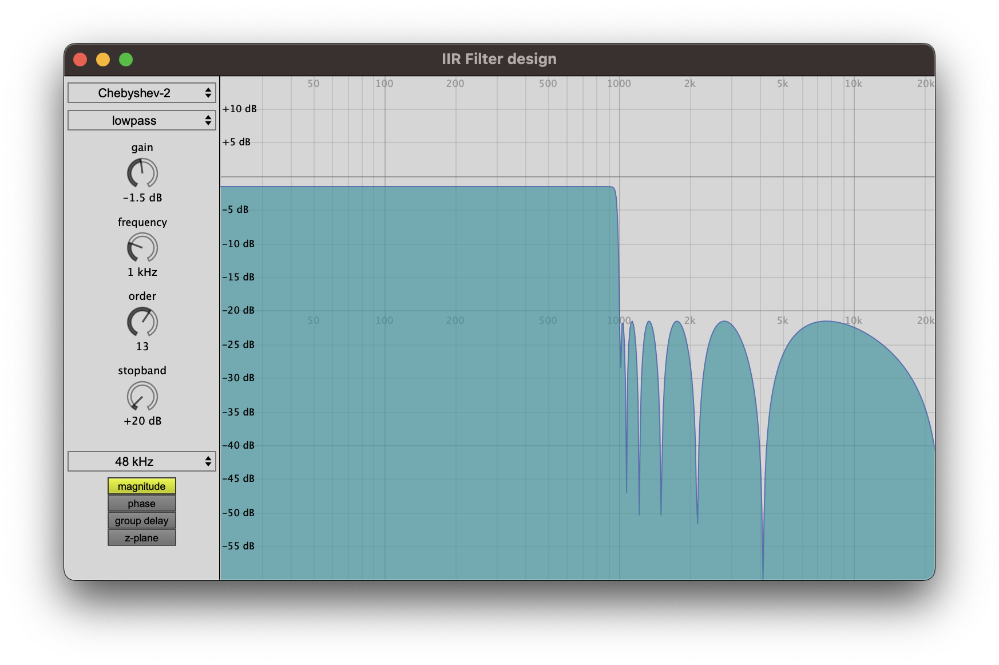

Tentative n°1 : avec un filtre analogique
Tentative n°1 : avec un filtre analogique
Tentative n°2 : avec un filtre analogique + digital

sur-échantillonnage : on échantillonne M fois plus

à 48 kHz = 0.8dB
à 96 KhZ = 3.8 dB
à 128x24kHz = 19 dB
voir Max "spat5.filterdesign.chebyshev.maxhelp"
Tentative n°1 : avec un filtre analogique
Tentative n°2 : avec un filtre analogique + digital
Action de calculer, de façon automatique, des valeurs numériques discrètes multiples d'un quantum, correspondant à une grandeur physique
CNRTL

Quantification
Système de numération base 10 (décimal)
Système de numération base 2 (binaire)
Quantification
Pour n bits, on a valeurs

Quantification

Quantification en bits entiers :Le code binaire signé est obtenu en rajoutant un bit de signe devant le MSB au code binaire
naturel. Pour un bit de signe nul, le nombre est positif, il est négatif pour un bit égale à un. Le code binaire signé est peu propice aux opérations arithmétiques. Le code complément à 2 correspond au code binaire naturel pour les positifs, et à 2^n - A pour les négatifs

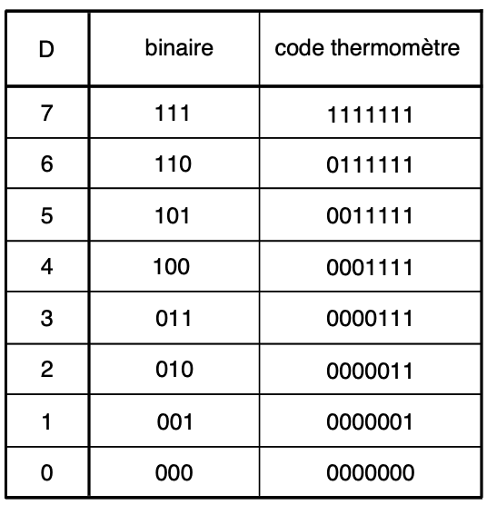
Pour n bits, la valeur maximale absolue est :
Quantification

Quantification en bits entiers :Quantification
Quantification
Erreur de quantification & bruit
Quantification
Erreur de quantification & bruit
Quantification
Rapport signal sur bruit (RSBn)
Quantification
Distortion harmonique et dithering
Quantification
Distortion harmonique et dithering
Quantification
Quantification non-uniforme
Dans certaines applications, le signal présente rarement de grandes amplitudes mais il est souvent d’amplitude faible. C’est le cas des signaux de parole. Aussi, il est intéressant d’avoir une quantification où le pas de quantification est différent dans les faibles et les grandes amplitudes. En téléphonie, la « loi A » permet d’obtenir la quantification représentée.
Vincent Mazet
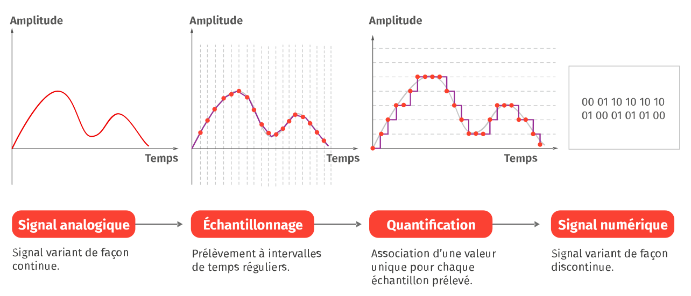
3. Format, flux, culture informatique
A.1) Conteneur audio (format non compressé)WAVE (.wav) - Waveform Audio File Format (Microsoft/IBM)
multicanal // LPCM et autres // métadonnées rudimentaires
AIFF (.aif) - Audio Interchange File Format (Apple)
multicanal // PCM // métadonnées rudimentaires
CAF (.caf) - Core Audio Format (Apple)
multicanal // LPCM et autres dont Apple Lossless // métadonnées avancées
BWF (.bwf) - Brodcast Wave Format (EuropBrodUnion)
Wave avec un bloc supplémentaire de méta-donnée (timestamp pour synchro)
3. Format, flux, culture informatique
A.2) Codec audio (COdeur-DECodeur)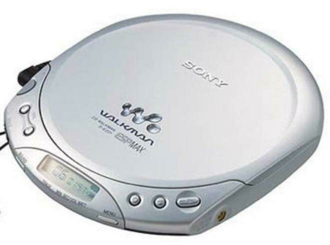
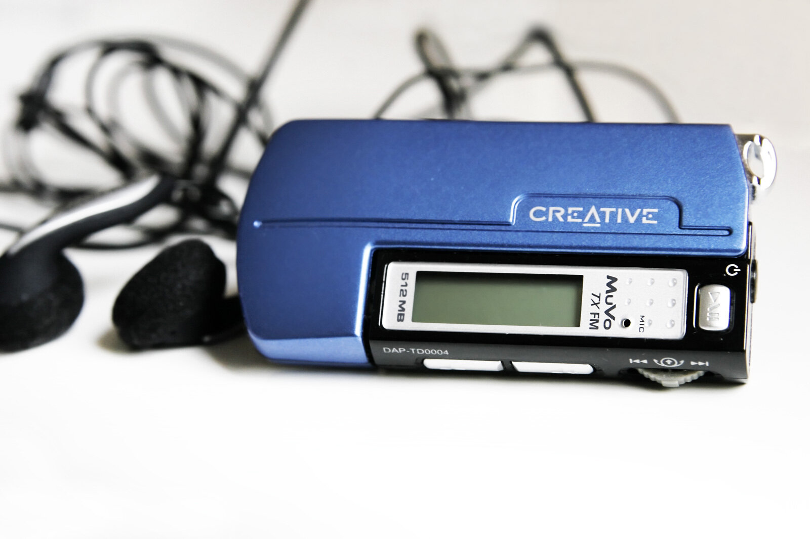
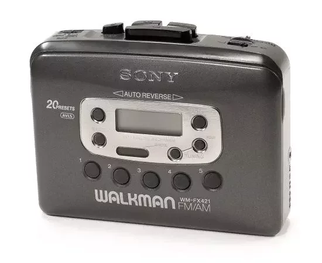
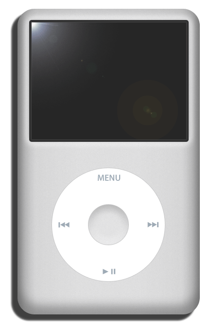
Fin 70s
mi 80s
fin 90s début 2000
3. Format, flux, culture informatique
A.2) Codec audio (COdeur-DECodeur)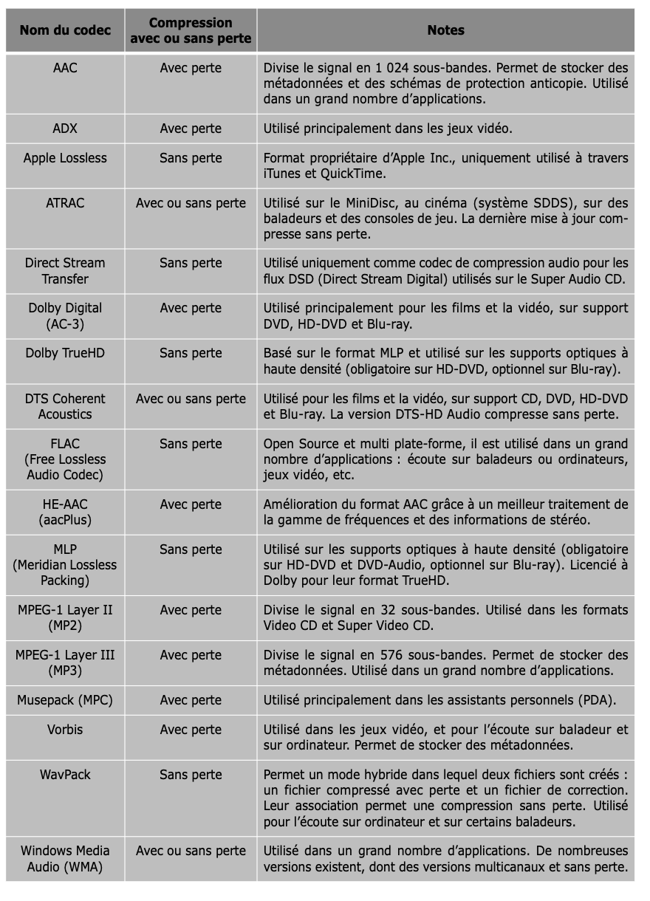
3. Format, flux, culture informatique
A.3) Débit binaire, taille de fichier :(en Kilo bit par seconde)
3. Format, flux, culture informatique
A.3) Débit binaire, taille de fichier :où n est la résolution, N ne le nombre de canaux, t la durée en seconde et un résultat en octet
3. Format, flux, culture informatique
A.3) Débit binaire, taille de fichier :Quelle place en mémoire pour 45 minutes d'enregistrement de 30 pistes à 96kHz 24bits ?
3. Format, flux, culture informatique
A.4) Flux audio, streaming : 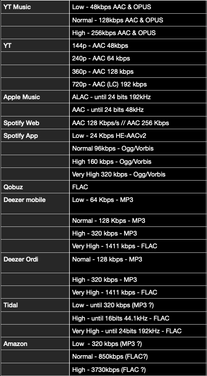
3. Format, flux, culture informatique
A.5) Bus, protocole de transmission et connectique : USB Type A, B, C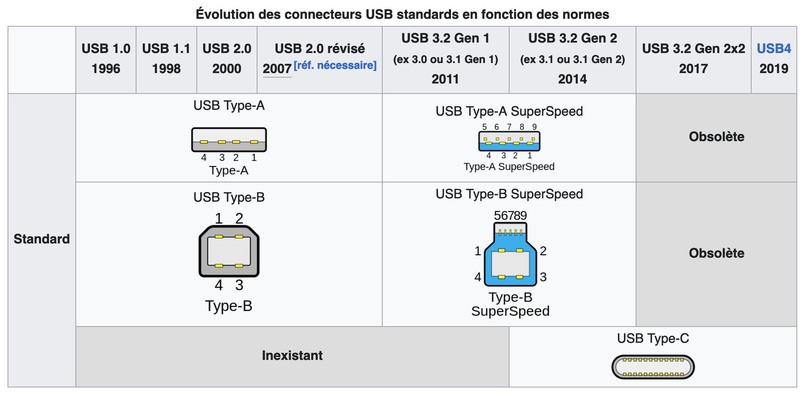
3. Format, flux, culture informatique
A.5) Bus, protocole de transmission et connectique : USB Type A, B, C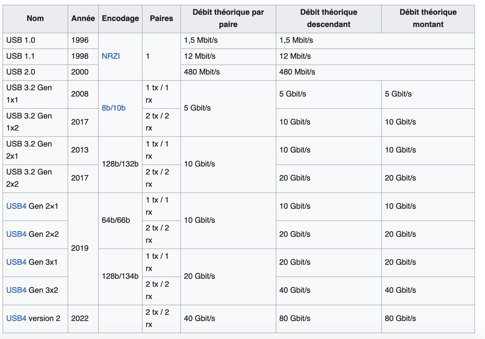
3. Format, flux, culture informatique
A.5) Bus, protocole de transmission et connectique : IEEE 1394 (Firewire, i.Link)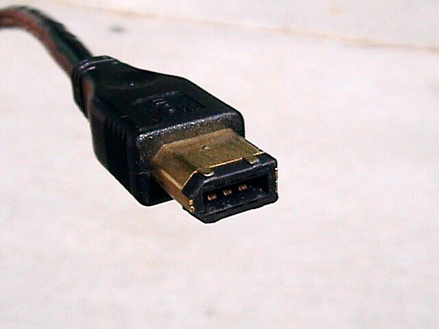
- 100 Mbits/s en v. IEEE 1394a-s100
- 200 Mbits/s en v. IEEE 1394a-s200
- 400 Mbits/s en v. IEEE 1394a-s400
- 800 Mbits/s en v. IEEE 1394b-s800
- 1 200 Mbits/s en v. IEEE 1394b-s1200
- 1 600 Mbits/s en v. IEEE 1394b-s1600
- 3 200 Mbits/s en v. IEEE 1394b-s3200
IEEE 1394-b
IEEE 1394-2000-a
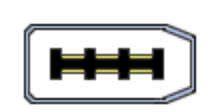
IEEE 1394-1995-a
3. Format, flux, culture informatique
A.5) Bus, protocole de transmission et connectique : ThunderboltThunderbolt 4 : 40 Gbit/s, 100W, 2x4k résolution 60Hz
Thunderbolt 5 : 80 Gbit/s
Connectique Mini Display ou USB-C et compatible protocole DisplayPort et PCIe
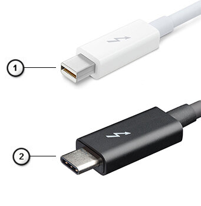